Atletklubben av 1928 ble stiftet som en bryteklubb i 1928. I snart 100 år har AK28 vært en markant klubb, med flere idretter, i bydelen Lund i Kristiansand, med sine karakteristiske rød drakter.
Det har vært gjort en formidabel innsats med å samle klubbens historie i tekst og bilder. Det anbefales på det varmeste å lese klubbens historie under. Bruk gjerne innholdsfortegnelsen for å navigere i historien.
God lesning!
Takk til spillere, trenere, lagledere og foreldre som har bidratt med bilder fra klubbens historie. Takk også til Fædrelandsvennen som har latt oss bruke noen av avisens bilder.
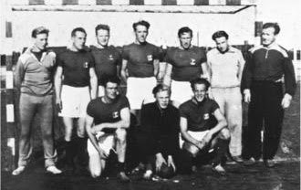
Stiftelsen og tidlig historie (1928–1945)
AK 28 ble stiftet 21. september 1928 under navnet Atletklubben av 1928, som en videreføring etter at bryteklubben Sparta ble lagt ned. Klubben ble drevet av pågangsmot og dugnadsånd – økonomien var svak, men innsatsen var sterk.
Bryting ble klubbens hovedgren, og AK 28 arrangerte nasjonale og internasjonale stevner allerede tidlig på 1930-tallet.
Klubbens første medaljevinner var Karl Karlsen (sølv i NM, 1932).
Klubbens første damelag spilte på Idda 7. juni 1945 for å feire freden. Det var stappfullt på tribunene. Vi tapte 6-1 for KIF. Disse spilte: Bibbi Albert, Liv Arnetveit, Siss Christiansen, Esther Omdal, Ågot Tønnesen, Evelyn Øslbø og Margot Olsen.
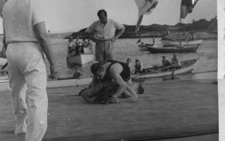
Bryting, friidrett og orientering
Bryterne dominerte klubben de første 30 årene. Flere utøvere tok medaljer i NM, blant andre Finn og Ole Hjemdahl, Hans Syvertsen og Birger Bye.
AK 28 arrangerte Friluftsstevnet i Bertesbukta – et stort, populært idrettsarrangement omtalt som «det mest originale i Norge».
Klubben var også aktiv i friidrett og orientering, spesielt med stafetter og lokale løp.
På slutten av 60-tallet dabbet brytingen gradvis av.
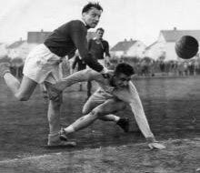
Håndballens inntog og gjennombrudd (1945–1980)
Håndball ble en del av klubben rett etter krigen.
Herrelaget kom til semifinale i NM i 1946 og 1955.
Damelaget var tidvis aktivt og tok flere kretsmesterskap.
Ballhallen (senere Odderneshallen) åpnet i 1963 og revolusjonerte håndballen. AK 28 ble en bred klubb med mange lag og solid sportslig utvikling.
Store prestasjoner
Småguttelaget vant NM(1973)
Guttelaget vant Peter Wessel Cup (1973)
Jentelaget tok NM sølv (1976)
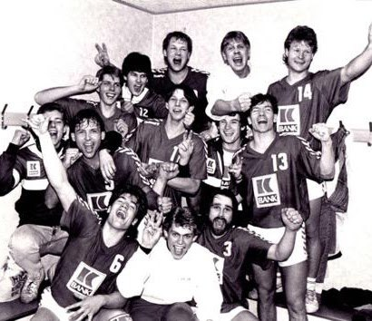
Nedgang og ny vekst (1980–2000)
Etter 50-årsjubileet slet klubben med frafall og manglende ledelse. Rundt 1985–90 ble klubben revitalisert av blant annet Carl Glastad, Helge Bjorvand og Johnny Hansen.
Herrelaget rykket opp til 2. divisjon to ganger (daværende nest øverste nivå).
Klubben ble en av de mest synlige i nasjonale serier for G16 og J16.
Bredde og rekruttering ble et hovedfokus.
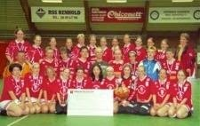
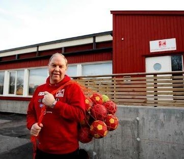
Klubbhuset – realisering av en drøm
I 2008 stod klubbens eget klubbhus ferdig ved Odderneshallen. Prosjektet ble ledet av ildsjeler som Arnfinn Strøm, Knut Stormyr og Ole Terje Kristensen.
Bygget ble fullfinansiert uten gjeld – en unik prestasjon i norsk idrett.
Klubbhuset ble raskt et sosialt og sportslig samlingspunkt for både barn, ungdom og voksne.
18. september 2005AK28 har gjennom mange år drømt om å få egne lokaler som kan samle virksomheten i klubben. Flere alternativer ble drøftet, bl.a. ei brakke på parkeringsplassen mellom hallen og vaktmesterboligen og utvidelse av kommunens kontor.
På denne dato har vi i klubbledelsen bestemt oss for å bygge klubblokalene i forbindelse med Odderneshallen. Arkitekt Arild Lauvland er engasjert til å tegne for oss. Neste skritt var å engasjere folk i en byggekomité og ei gruppe med hjerte i AK28 til å skaffe penger til prosjektet. Gruppa bestod av Ole Terje Kristensen, Terje Jochumsen, Knut Stormyr, Carl A. Glastad, Morten Aavitsland og Per Reidar Aabel.
3. oktober 2005Styret hadde i dag møte sammen med styringsgruppe for finansiering og byggeledelsen. Styret skulle avklare så fort som mulig tomt og kontrakter med kommunen før videre planlegging kan skje. Gruppa innkalles så fort dette er klart.
17. november 2005Vi arbeider målrettet videre med planene mot realisering av egne klubblokaler. I neste uke håper vi at alle papirer er sendt og i orden og at vi snart får klarsignal fra kommunen. Målet må være at vi kan fortsette selve prosjekteringsarbeidet rett før jul eller rett over nyttår 2006.
7. desember 2005Arkitekten holder i disse dager på med å gjøre ferdig tegninger og fremlegge saken for kommunen. AIK-Lund har akseptert løsningen med lagerenhet for deres boksering. Denne skal ligge i det arealet vi nå prosjekterer. (ble tatt bort etter hvert) Vi håper snart kan komme til det tidspunkt der vi har grunnlagsmateriale nok til å ta en endelig avgjørelse m.h.t. å bygge eller ikke.
17. januar 2006Tegningene fra arkitekt Lauvland er nå klare. Papirene sendes til godkjenning i kommunen i dag. Forhåpentligvis vil resultatet av søknaden være klar i løpet av 4 – 7 uker.
23. februar 2006Nå er godkjenning gitt og vi kan fortsette arbeidet mot klubbhus. I løpet av kort tid vil de siste brikkene være klare og planleggingen av selve byggearbeidet starte. Byggegruppa og finansgruppa er satt «i høyeste beredskap».
20. mars 2006I disse dager utarbeides det en beskrivelse av hva som skal gjøres av arbeid med klubbhuset vårt. Det skal igjen danne grunnlaget for de anbud som skal sendes inn. Alt skulle ligge til rette for oppstart nå i vår.
17. april 2006Vi håper at grunnarbeidene ute skal stå ferdig til sommerferien, slik at vi kan starte med å reise klubbhuset etter sommerferien. Alt er avhengig av anbudsrundene og tilgang på firmaer som kan utføre arbeidet.
11.september 2006Dessverre er det videre arbeidet med klubbhus stoppet opp pga «bemerkninger» fra barne- og unges representant i kommunen. Vi beklager dette sterkt, og er i dialog med idrettsetaten for å få sluttført denne fasen av arbeidet. Vi gleder oss forøvrig over at Odderneshallen er blitt svært fin etter renoveringen.
27. februar 2007I dag ble det avholdt et møte mellom oss i AK28 og idrettsetaten. Oppsummeringer ble gjort, slik at vi kan komme videre i arbeidet. I løpet av kort tid vil nok oppstarts tillatelse bli gitt. Styret jobber med å få dette til snart.
August 2007Gravemaskinen er på plass og arbeidene mot ferdig klubbhus kan starte. Alle kan glede seg til klubblokalene står ferdig til bruk for alle AK medlemmer i løpet av sesongen 07/08.
Felles dugnad for hele klubben i november 2007.
I noen hektiske dager i november 2007 klarte klubbmedlemmer, spillere, ledere og foreldre å trå til med 90 timer dugnad 6 dager pr. uke i to uker. Helt fantastisk!
I tillegg klarte 15, 16 og 18 årslagene å ta 4-5 økter ekstra i desember. Alt dette bidro til ca. 90.000,- kr. til klubbhuset. Vi i klubbledelsen vil benytte anledningen til å takke dere foreldre for bidraget til klubbhus-økonomien gjennom dugnadsinnsatsen.
Perioden fra desember 2007 til april 2008.
Klubbhuset blir reist og ferdigstilt i denne perioden. Arnfinn Strøm gjorde en formidabel innsats i hele perioden. Han fikk låne bil av Gumpens auto og med Arnfinn som sjåfør og Ole Terje Kristensen og Per Reidar Aabel som hjelpemenn, dro de til Ikea i Stavanger for å handle inn møbler.
I den siste perioden frem mot Umbro cup i slutten av april 2008 var det hektisk virksomhet. Til turneringen kunne vi åpne opp for bruk, men siste del av arbeidene ble gjort i mai 2008.
I november 2008 ble klubbhuset brukt til den store 80 årsdagen til klubben. Ca 100 festkledde AK- medlemmer fikk gleden av å se klubbhuset helt ferdig.
Gaver og bidrag til klubbhuset
Finansieringsgruppa klarte å skaffe arenareklamer i Odderneshallen for 300.000,- kroner. Gruppa bestod av Terje Jochumsen, Carl A. Glastad, Morten Aavitsland, Knut Stormyr, Ole Terje Kristensen, Johnny Hansen og Per Reidar Aabel.
En gjeng med tidligere medlemmer, Sport & spill, klarte å samle inn en stor sum. Plakett er satt opp i klubbhuset som takk for hjelpen.
En spesiell takk til ledelsen ved idrettskontoret for all hjelp med planarbeid, søknader og tomteerverv.
Lyd- og bildeanlegget ble sponset av et lokalt firma i byen som også sponset lydanlegget inne i Odderneshallen.
GHV montasje sponset lydisoleringen og skilleveggene.
Gjensidigestiftelsen bidro med 100.000,- kroner.
Tippemidlene kom etter hvert og utgjorde 700.000,- kroner.
Knut Stormyr gav 400.000,- kroner.
Og dermed var klubbhuset ferdig bygd og fullfinansiert uten at klubben sitter med gjeld.
Rett og slett imponerende.
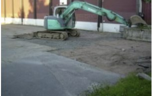
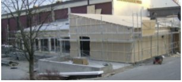
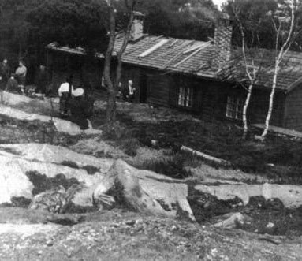
Klubbhytta
Vardehytta ved Skråstadvarden var AK 28s første samlingsted. Den var svært populær i mange år.
Vardehytta på Skråstadvarden var AK 28s hytte i mange år. Den ble bygget av tyskerne under krigen. I 1945 begynte den årelange striden om hytta. Grunneier ville rive; mens AK 28 ville overta hytta. I 1947 bestemte kommunen å overlate driften til AK 28. Klubben hadde fått sitt første samlingssted.
Et samlingspunkt for klubben, men også for Kristiansands mange turglade innbyggere. Hyttta var et naturlig mål for søndagsturen for mange. Vel fremme ble de møtt av frivillige fra AK 28 som solgte brus, kaffe og vafler. Trafikken var stor i helgene når det var fint vær, mens det naturlig nok dabbet av i regnvær.
Etter hvert begynte også pøblene å besøke hytta. Den ble stadig utsatt for store og små hærverk, og det ble et slit å holde hytta i stand. I årsberetningen fra 1959/1960 kan vi lese at det var stjålet 25 pakker sigaretter og 12,00 kroner i vekslepenger. I tillegg ble noen ruter knust. Innbruddet ble anmeldt til politiet, men saken be henlagt.
Situasjonen er godt beskrevet i denne reportasjen fra 1973 i Dagbladet Sørlandet. Den er skrevet av Oddleiv Moe, som også har lang fartstid som keeper i AK 28.
I protokollen fra 1971 skrev sekretær Rolf Otto Brandsvoll følgende på vegne av hyttestyret: Det synes som om interessen blant klubbmedlemmene er lik null når det gjelder hyttas utseende og drift. Og fortsetter: Slik situasjonen er nå er det praktisk umulig å få hytta ril å bære seg økonomisk. Forutsetningene er der, men. medlemmene svikter. Årsmeldingen slutter med oppfordring om å velge: Enten full satsing eller nedbrenning. Slik hytta er i dag, skjemmer den ut et vakkert turterreng.
Dette ble skrevet i 1971, men noe vedtak ble aldri fattet. Ingen orket tanken på restaurering. Og slik hanglet og gikk det fram til 1986. Da dro en del AK-gutter en lørdag opp til hytta med bensin og fyrstikker. Brannvesenet ble aldri varslet, men hytta brant ned til grunnen.
Klubben hadde mistet sitt samlingsted og byens innbyggere et populært utfartsmål.
Det skulle gå over 20 år før klubbhuset overtok som samlingsted
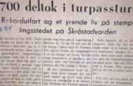
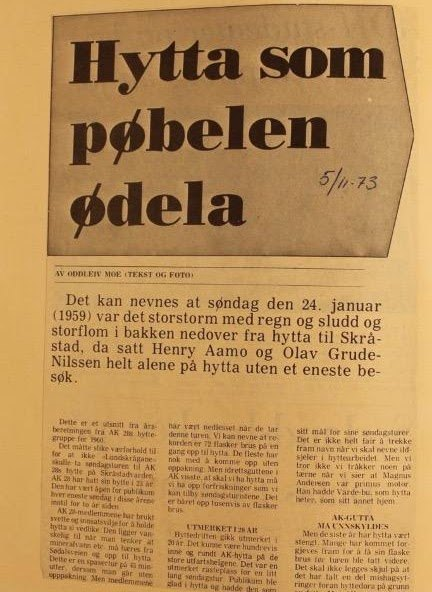
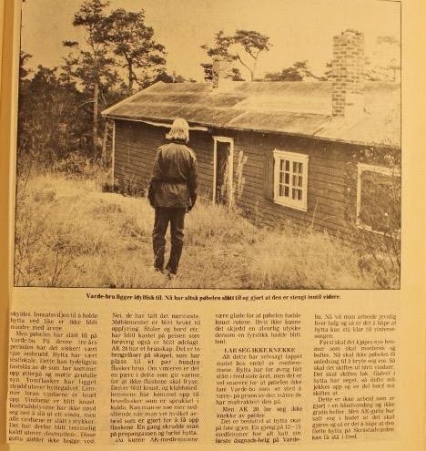
Sportslige høydepunkter
NM-gull for veteraner (2006) – klubbens første NM-tittel.
Sølv i junior-NM for jenter (1976) – fortsatt klubbens beste resultat i aldersbestemt håndball.
Bronse i junior-NM for gutter (1959).Scoringsrekord (1989) – 81–11 i seriekamp, fortsatt uslått.
Deltakelse i nasjonale aldersbestemte serier fra slutten av 80-tallet til midten av 2000-tallet.
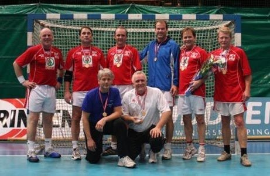
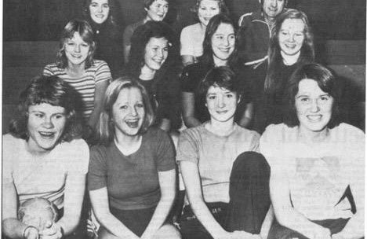
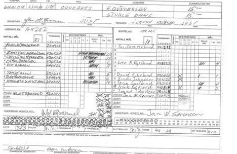
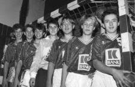
Bilder herrelag
Storhetstid på 70- og 80-tallet - Herrelaget
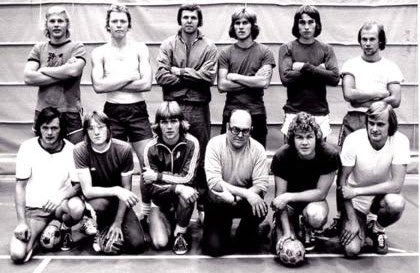
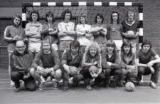
Fem ganger i løpet av 70- og 80-tallet rykket AK 28s herrelag opp til nest øverste nivå av seriehåndballlen. De 20 årene er de beste i klubbens håndballhistorie.
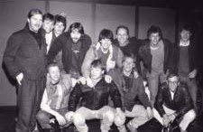
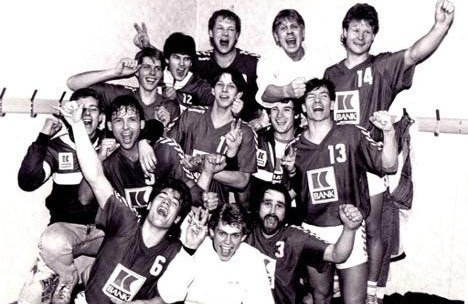
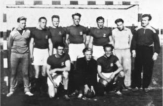
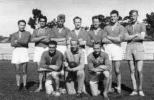
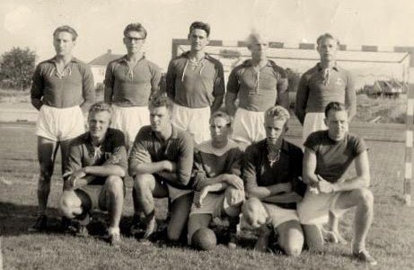
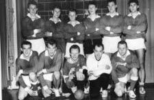
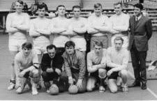
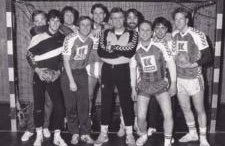
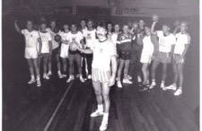
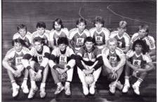
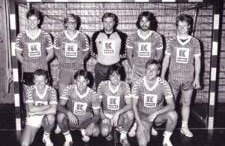
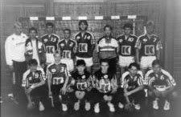
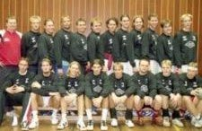
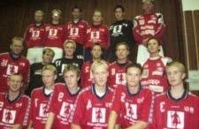
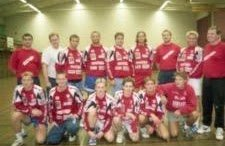
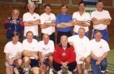
Bilder damelag
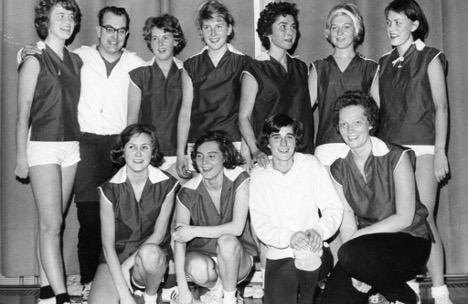
Foran fra venstre: Mette Nygård, Signe Sørensen, Karen Elise Larsen, Reidun Hegg.
Damelaget hadde sin beste periode på 60-tallet. Kom til kvartfinale i NM og spilte (og tapte) kvalifiseringskamp til hovedserien.
I 1964 spilte damelaget seg helt fram til kvartfinalen i norgesmesterskapet innendørs.
Kvartfinalen mot Trønderlyn ble spilt i Trondheim. AK 28 kjempet tappert, men tapte 7-5. Målscorere var Sissel Reinertsen 2, Lise Wroldsen 2 og Brita Hansen 1.
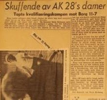
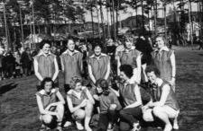
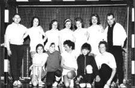
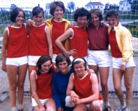
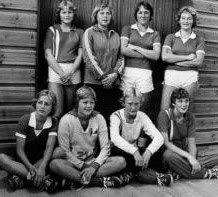
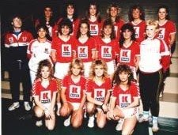
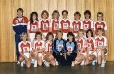
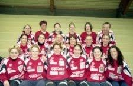
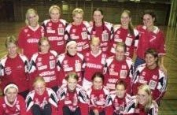
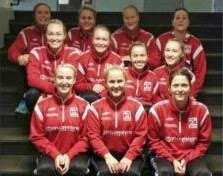
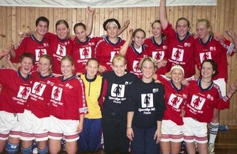
Bryternes stolte historie
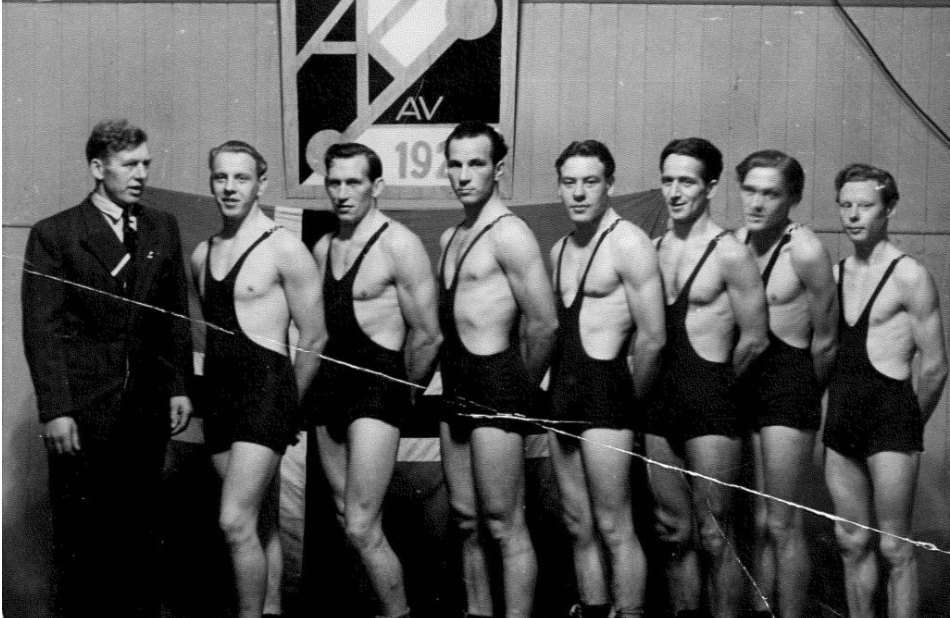
Fire sølv og fire bronse i senior-NM. Fem gull, sju sølv og ti bronse fra junior-NM. En sølv og en bronse fra ungdoms-NM. Den første av totalt 32 medaljer ble kapret i 1932 og den siste ble vunnet i 1992. Det er brytehistorien i AK 28 i tørre tall. Dette blir nok også stående som endelige tall, for det er ingen ting som tyder på at brytetradisjonene tas opp igjen.
Det var bryterne som startet og drev klubben i 1928, men etter mange år og mange aktive brytere var det definitivt slutt i begynnelsen av 2000-tallet. En epoke var over. AK 28 var fra da av en ren håndballklubb.
Det går en sammenhengende tråd fra brødrene Tønnes, Finn og Ole Hjemdahl som var med og stiftet bryteklubben Atletklubben av 1928 og til brødrene Frode og Børre Andreassen som var de to siste aktive bryterne i den samme klubben. I denne perioden har klubben fostret en lang rekke gode brytere, og har arrangert flere NM og internasjonale stevner. Alt med stor suksess.
Klubbens norke juniormestere
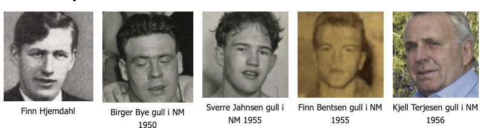
Den første medalje
Karl Karlsen ble den første i klubben som tok NM-medalje da han fikk sølv i 1932. Finn Hjemdahl ble klubbens første norske mester i juniorklassen da han vant i 1937. 1937 var i det hele tatt et stort mesterskap for AK 28. Broren Ole tok sølv, mens Hans Syvertsen og Alf Andersen tok bronse. Fire medaljer i samme NM er sterkt. Andersen plusset på med en bronse til året etter.
Ole Hjemdahl tapte finalen
I 1934 arrangerte AK 28 sitt første senior-NM, og det endte med en sølv og en bronse til klubbens brytere. I 1939 var det klart for et nytt senior-NM i Kristiansand. Turnhallen var full av spente tilskuere som heiet på hjemmefavoritten Ole Hjemdahl. Det så lenge ut til å gå Hjemdahls vei. Kåre Johansen fra Halden var finalemotstander. Ole førte kampen, og da tiden var ute og dommerne skulle telle opp sine poeng, var det ingen i Turnhallen som tvilte på at Ole var mesteren.
Sjokket var stort da Johansen ble tilkjent seieren med dommerstemmene 2-1. Publikum svarte med en enorm pipekonsert, men til ingen nytte. To av dommerne (en av dem var fra Kristiansand) hadde utrolig nok Johansen foran på poeng. Dermed ble AK 28 og Ole Hjemdahl snytt for det som skulle vært klubbens eneste norske seniormester.
Før krigen hadde følgende plassert seg i senior-NM: Karl Karlsen nr 2 i 1932 og 3 i 1934, Erling Johan Hetland nr 3 i 1934 og Ole Hjemdahl nr 2 i 1939. I junior-NM ble Finn Hjemdahl klubbens første mester i 1937, mens broren Ole tok sølv i samme mesterskap. I tillegg ble det tre bronsemedaljer til Börger Eriksen, Alv Salvesen og Hans Syversen. I 1938 ble det ny bronsemedalje til Salvesen og året etter enda en bronsemedalje, denne gang til Ole Hjemdal.
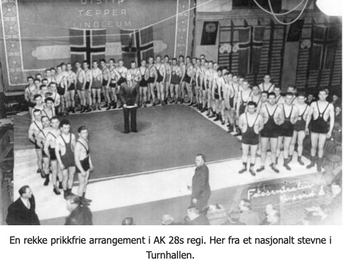
Historisk sus
AK 28 har arrangert to stevner med historisk sus over seg. Klubben stod for det første brytestevne i en samlet idrettsbevegelse etter splittelsen mellom idretten og arbeiderbevegelsen i 1936. Det andre store stevnet var det første arangementet etter krigen. Og det ble litt av et stevne. Arbeiderforeningen var stappfull . Dørene måtte stenges, og da stod det fortsatt masse mennesker igjen på gaten som ikke kom inn. Kassereren fikk tårer i øynene og klump i halsen over alle pengene som rullet inn i klubbkassa, og AK-guttene ble tydelig inspirert av publikum. Fem av sju mulige klasseseire gikk til klubben.
AK 28 har i hele bryteperioden vært en aktiv og dyktig arrangør som har høstet lovord fra forbund, deltakere og presse for sine stevner. Flere senior- og junior-NM ble prikkfritt arrangert. Det samme var tilfelle med lagkamper og store internasjonale stevner
Kjell Wikøren fikk bronse i to NM på rad
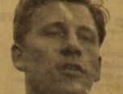
Første junior-NM på hjemmebane var i mars 1946. Publikum sviktet totalt, og AK8s egne gutter klarte ikke å hevde seg. I 1947 ble lagkonkurranse innført igjen, og AK 28 gjorde det bra, men publikum sviktet. Den voldsomme sportsinteressen i den første fredstid hadde lagt seg. Mange av bryterne sluttet, og klubben slet.
Eneste lyspunkt i den mørke perioden var junior-NM i 1950, Birger Bye ble norsk mester og Kjell Wikøren ble bronsevinner. Wikøren vant alle sine seks kamper, men ettersom tre av kampene ble avgjort på poeng ble det bare bronse. Det var samme valør som Wikøren hadde fått året før.
Johannes Roland tok sølv i junior-Nm i 1951 og bronse året etter.
NM var en opptur, men det kunne ikke skjule at klubben var i ferd med å gå nedenom og hjem, som det står i klubbens rapport til 25 års jubileet i 1953.
Reidar Bye overtok som formann og han var full av dristige og gode ideer. Han lanserte ideen om stevne i Bertes, og det ble en knallsuksess. Brytingen foregikk på en lekter rett ut fra tribunen. Det er det flotteste og mest originale stevnet som er arrangert i Norge, og det var en glimrende propaganda for brytesporten. Bryteforbundet kom med en flott honnør til AK 28 etter stevnet. Eneste skår i gleden var at det var flere snyltere enn betalende på tribunen, og stevnet gikk med underskudd.
I 1951 arrangerte AK 28 senior-NM for tredje gang. Det var stilt visse forventninger til klubbens brytere, men de feilet en etter en. Kjell Wikøren var et hederlig unntak, men heller ikke han klarte å markere seg.
To gull og en sølv
I 1955 stilte AK 28 med tre brytere i junior-NM, og de tre gjorde en flott innsats. Sverre Jahnsen og Finn Bentsen ble begge norske mestere, mens Kjell Terjesen fikk sølv i weltervektklassen. Året etter gikk Kjell Terjesen helt til topps i junior-NM, mens Lars «Guttis» Jahnsen tok sølv. «Guttis» kapret et nytt sølv i 1959.
Lars «Guttis» Jahnsen vant sølv i NM to ganger
Birger Pedersen tok bronse i NM
I 1957 ble det en ny sølvmedalje til klubben, da Øyvind Nordkvist ble toer i sin klasse. Nordkvist var for øvrig førstekeeper i Start i mange år. Samme år tok Birger Pedersen bronse i NM.
I 1958 var Kjell Terjesen rykket opp i seniorklassen og debuterte med bronse i senior-NM. Året etter rykket han opp til sølvplass. I 1959 ble det sølv til Sverre Jahnsen.
I de samme årene representerte Sverre Jahnsen, Finn Berntsen og Kjell Terjesen AK 28 på junior-og ungdomslandslaget.
Øyvind Andrassen ble den siste fra AK 28 til å ta medalje i et NM
Slutten av 50-tallet var en aktiv og god periode for klubbens brytere, men når disse bryterne la opp, stod det ingen klar til å overta. Først i 1964 fikk klubben fram en ny gruppe brytere med Øyvind Andreassen i spissen. Klubben søkte og fikk arrangementet av deler av junior-NM i 1965. Fire klasser gikk i Idrettshallen i Kristiansand, mens resten gikk i Larvik. AK 28 stilte med tre brytere på hvert sted. Det var bare Øyvind som hevdet seg.
Dette var hans siste sjanse til å bli norsk juniormester. Øyvind fikk to fallseire, to poengseire pluss en uavgjort. I den siste kampen ble det tap på fall mot norgesmesteren. Øyvind var strålende fornøyd med sølvet, men var skuffet over hvor få som var på tribunen. Det var ikke mye støtte å hente fra tribunen.
I 1981 var AK 28 igjen arrangør for et norsk seniormesterskap. Over 100 brytere var samlet i Starthallen. Ingen av klubbens egne brytere nådde opp til medaljeplass, men arrangementet stod som vanlig til gutt. Tvillingene Lars og Jon Rønningen ble norske mestere i 48 og 52 kilos klassen under dette mesterskapet.
Dette var det siste mesterskapet Ak 28 arrangerte, og brytegruppen gikk i dvale. AK 28 hadde arrangert fire senior-NM og fire junior-NM siden starten, men nå var det slutt.
Håndballspillere med brytetrening
Nytt forsøk på å vekke liv i brytesporten ble gjort på slutten av 80-tallet da Øyvind var trener for sønnene Frode og Børre. Eldstemann Frode ble nummer to i ungdoms-NM i 1991. 1992 ble det tredjeplass, og det er siste gang en bryter fra AK 28 stod på pallen i et NM.
I den perioden ble det innledet et samarbeid mellom bryte- og håndballgruppen. Håndballspillerne trente bryting en gang i uken sammen med bryterne. Resultatet av det var ikke flere aktive brytere, men sterkere og kjappere forsvarsspillere i håndball.
Brødrene Andreassen fortsatte noen år til, men de gav seg var det slutten for en tradisjonsrik idrettsgren. En lang rekke brytere hadde siden 1928 skaffet klubben heder og ære. Nå er brytematta ryddet bort for godt. Håndballen har overtatt.
Her følger en del bilder fra brytehistorien:
Klubbens ledere - historisk oversikt
Fra 1928 og fram til i dag har fem kvinner og 32 menn ledet klubben: De første hadde tittelen formenn. Og det var en mannsdominert klubb i mange år. Klubbens øverste tillitsvalgte kalles leder i dag.
Liv Turid Naglestad var på 80-tallet den første kvinne som ledet AK 28. I 1994 ledet Goya Wennesland Dahl klubben og på 2000-tallet kom kvinne nummer tre, Laila Ottesen. Den fjerde i rekken, Unni-Mette Stamnes Køpp, ledet klubben i tre år.
To menn har vist en imponerende vilje til å føre klubben fremover. Magnus Andersen har ledet klubben i ti år, mens Knut Stormyr har ledet klubben i ni år.
Her er fem av klubbens første ledere:
Klubbens første leder het Fredvold Andersen. Han ble valgt til formann (som det het den gang). Han fungerte ett år, og ble etterfulgt av Magnus Andersen, som også satt et år i denne omgang. Einar Grøntoft var formann i 1930 og 1931. I 1932 var det Harry Rosen som styrte klubben. Tønnes Hjemdahl som var en av stifterne, ble formann første gang i 1933. Han ledet klubben også i 1934, men i 1935 kom Einar Grøntoft tilbake som leder. Han overlot ledelsen igjen til Tønnes Hjemdahl ett år senere. Finn Hjemdahl etterfulgte broren i formannsstolen i de neste to årene. I 1939 overtok Trygve Larsen.
Tønnes Hjemdahl ble valgt til leder i 1940, men under krigen ble all aktivitet lagt ned. Da freden kom i 1945, stod Tønnes Hjemdahl klar til å lede klubben igjen. og han ble sittende ut 1946. Jørgen Andresen ledet klubben i 1947 0g 1948.
Etter Andresen kom disse lederne
1949 Brynjulf Engebretsen
1950/51 Reidar Bye
1952 Johannes Rolland
1953 Reidar Bye
1954-1958 Magnus Andersen
1959 Thorvald Lohne
1960 Magnus Andersen
1962-1964 Olav Grude Nilsen
1965-1966 Magnus Andersen
1967-1969 Arne Egeland
1970-1971 Kjell Olsen
1972 Steinar Gjertsen
1973 Terje Kaalaas
1974 Odd Nordmo
1975-1978 Bent Kold Hansen
1979 Liv Turid Naglestad
1980 Bjørn Birkeland
1981 Harald Natvig
1982-1984 Eivind Jørg Gjermundnes
1985-1987 Carl Anders Glastad
1988-1989 Knut Stormyr
1990-1991 Morten Aavitsland
1992 Odd von Porat Fiane
1993 Knut Stormyr
1994 Goya Wennesland Dahl
1995 Kjell Ingebretsen
1996-1997 Ole Terje Kristensen
1998 Knut Stormyr
1999-2000 Terje Jochumsen
2001-2005 Knut Stormyr
2006-2008 Per Reidar Aabel
2009 Knut Stormyr
2010 Laila Ottesen
2011-2013 Jan Nordlid
2014-2016 Unni Mette Stamnes Køpp
2017-2019 Knut Stormyr
2020-2023 Silje Kristine Gumpen
2024-2025 Knut Stormyr
2026- Ole Lunde-Borgersen
Gullnål med diplom
AK 28s høyeste utmerkelse til medlemmer som hadde gjort en ekstra innsatsfor klubben, var fram til 1998 «Gullnål med diplom». Totalt er det 17 personer som har fått denne utmerkelsen.
Tønnes Hjemdal, Finn Hjemdal og Magnus Andersen var alle blant stifterne av klubben. Petter Grøntoft, Kjell Terjesen og Øyvind Andreassen var gode på brytematta og gjorde i tillegg en administrativ innsats. Ragnvald Nilsen og Henry Aano la begge ned en stor innsats for klubben på mange plan.
Olav Grude Nilsen var formann i mange år og var aktiv leder både i bryte- og håndballgruppa.
De sju andre er velkjente navn innen håndballmiljøet. De har alle lagt ned et stort arbeid til beste for klubben. Brita Hansen og Bent Kold Hansen er mor og far til Johnny, som er æresmedlem i klubben. Det sier det meste om hva familien Hansen har betydd for klubben i mange, mange år.
Erkjentlighetspokalen
I 1983 innførte klubben en pokal som tilfaller den personen som over tid har gjort en meget god administrativ innsats i klubben.
Den første pokalen ble tildelt Tor Ingebretsen og Helge Bjorvand. Totalt har 17 personer blitt tildelt denne pokalen fram til 2017.